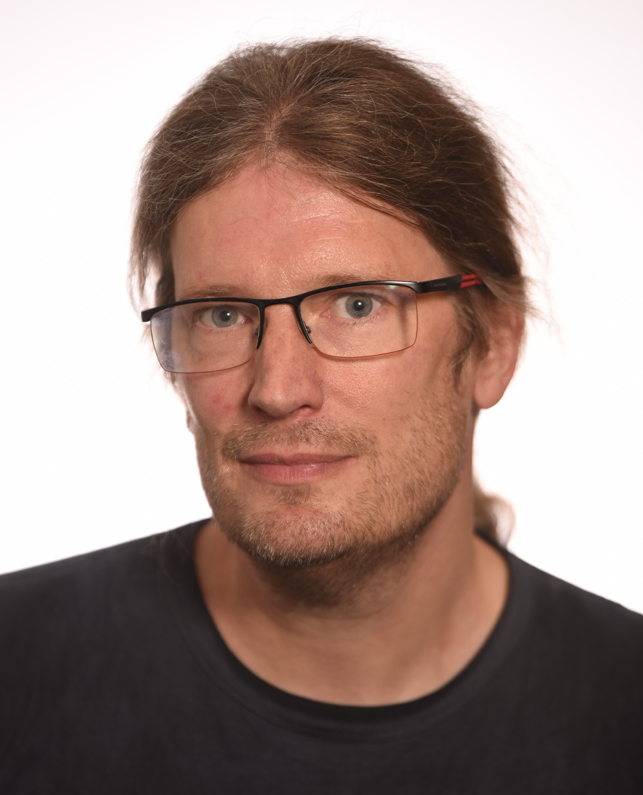

Christian Igel
Professor, Dr. habil.
| Office address: | | Mail address: |
| Department of Computer Science | | Department of Computer Science |
| University of Copenhagen | | University of Copenhagen |
| Universitetsparken 1, room 1.2.20 | | Universitetsparken 5 |
| 2100 København Ø | | 2100 København Ø |

Short CV
I am professor at DIKU, the Department of
Computer Science at the University of Copenhagen.
I studied Computer Science at the Technical University of Dortmund, Germany. In 2002, I received my Doctoral degree from the Faculty of Technology, Bielefeld University, Germany, and in 2010 my Habilitation degree from the Department of Electrical Engineering and Information Sciences, Ruhr-University Bochum, Germany.
From 2003 to 2010, I was a Juniorprofessor for Optimization of
Adaptive Systems at the Institut
für Neuroinformatik, Ruhr-University Bochum. In October
2010, I was appointed professor with special duties in machine
learning at DIKU. Since December 2014 I am a full professor at DIKU.
I am director of the SCIENCE AI
Centre.
You can find a short article about the centre
here. Furthermore, I
am a co-lead of the Pioneer
Centre for Artificial Intelligence, Denmark.
I am a Fellow of ELLIS, European Lab for Learning and Intelligent Systems.
Among others, I serve as an Editor of the German Journal on Artificial Intelligence (KI)
and an Associate Editor of the Evolutionary
Computation Journal (ECJ) and the Artificial
Intelligence Journal (AIJ). You can get free access to AIJ here.
Research Interests
My main research area is Machine Learning.
Currently, I am particularly interested in
- support vector machines and other kernel-based methods,
- evolution strategies for single- and multi-objective optimization
and reinforcement learning,
- PAC-Bayesian analysis of ensemble methods,
- deep neural networks and stochastic neural networks,
and applications of machine learning that help achieve the sustainable development goals.
Selected Recent Publications
Please click
here for a
full list.
I also maintain a
Google
scholar profile.
Florian Reiner, Martin Brandt, Xiaoye Tong, David Skole, Ankit Kariryaa, Philippe Ciais,
Andrew Davies, Pierre Hiernaux, Jerome Chave, Maurice Mugabowindekwe, Christian Igel,
Stefan Oehmcke, Fabian Gieseke, Sizhuo Li, Siyu Liu, Sassan S. Saatchi, Peter Boucher,
Jenia Singh, Simon Taugourdeau, Morgane Dendoncker, Xiao-Peng Song, Ole Mertz,
Compton Tucker, and Rasmus Fensholt.
More than one quarter of Africa’s tree
cover found outside areas previously classified as forest.
Nature
Communications 14, 2023
Compton Tucker, Martin Brandt, Pierre Hiernaux, Ankit Kariryaa, Kjeld Rasmussen, and
Jennifer Small, Christian Igel, Florian Reiner, Katherine Melocik, Jesse Meyer, Scott
Sinno, Eric Romero, Erin Glennie, Yasmin Fitts, August Morin, Jorge Pinzon, Devin
McClain, Paul Morin, Claire Porter, Shane Loeffle, Laurent Kergoat, Bil-Assanou Issoufou, Patrice Savadogo, Jean-Pierre Wigneron, Benjamin Poulter, Philippe Ciais, Robert
Kaufmann, Ranga Myneni, Sassan Saatchi, and Rasmus Fensholt.
Sub-continental
scale carbon stocks of individual trees in African
drylands.
Nature 615:80-86, 2023
Maurice Mugabowindekwe, Martin Brandt, Jerome Chave, Florian Reiner,
David Skole, Ankit Kariryaa, Christian Igel, Pierre Hiernaux,
Philippe Ciais, Ole Mertz, Xiaoye Tong, Sizhuo Li, Gaspard
Rwanyiziri, Thaulin Dushimiyimana, Alain Ndoli, Valens Uwizeyimana,
Jens-Peter Lillesø, Fabian Gieseke, Compton Tucker, Sassan
S. Saatchi, and Rasmus Fensholt.
Nation-wide
mapping of tree-level aboveground carbon stocks in
Rwanda.
Nature Climate Change 13:91-97, 2022
Martin Brandt, Compton J. Tucker, Ankit Kariryaa, Kjeld Rasmussen,
Christin Abel, Jennifer Small, Jerome Chave, Laura Vang Rasmussen,
Pierre Hiernaux, Abdoul Aziz Diouf, Laurent Kergoat, Ole Mertz,
Christian Igel, Fabian Gieseke, Johannes Schöning, Sizhuo Li,
Katherine Melocik, Jesse Meyer, Scott Sinno, Eric Romero, Erin
Glennie, Amandine Montagu, Morgane Dendoncker, and Rasmus
Fensholt.
An unexpectedly large count of trees in the western Sahara
and Sahel.
Nature 587:78-82, 2020
popular science summary 10 remarkable discoveries from 2020
Jan Kremer, Fei Sha, and Christian Igel.
Robust Active Label Correction.
International Conference on
Artificial Intelligence and Statistics (AISTATS), Proceedings of Machine Learning Research
84, 2018
Niklas Thiemann, Christian Igel, Olivier Wintenberger, and Yevgeny Seldin.
A Strongly Quasiconvex PAC-Bayesian Bound.
In S. Hanneke and L. Reyzin, eds.:
Algorithmic Learning
Theory (ALT), Proceedings of Machine Learning Research
76, pp.
466-492, 2017
![[Min-Max architecture]](images/MinMax.png ) Christian Igel. Smooth Min-Max Monotonic Networks.
International Conference on Machine Learning (ICML), 2024
Christian Igel. Smooth Min-Max Monotonic Networks.
International Conference on Machine Learning (ICML), 2024